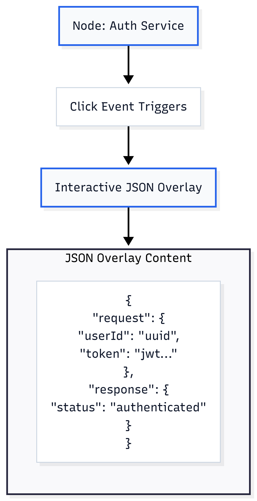
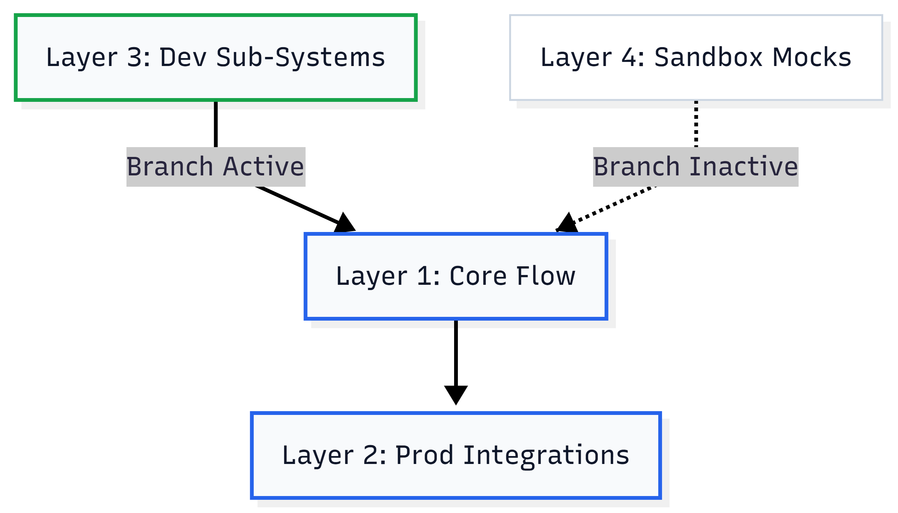
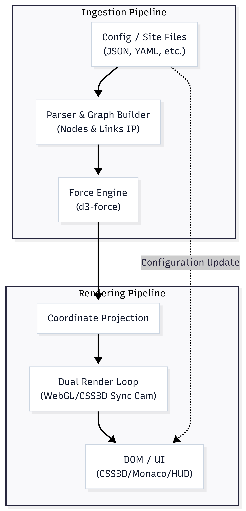
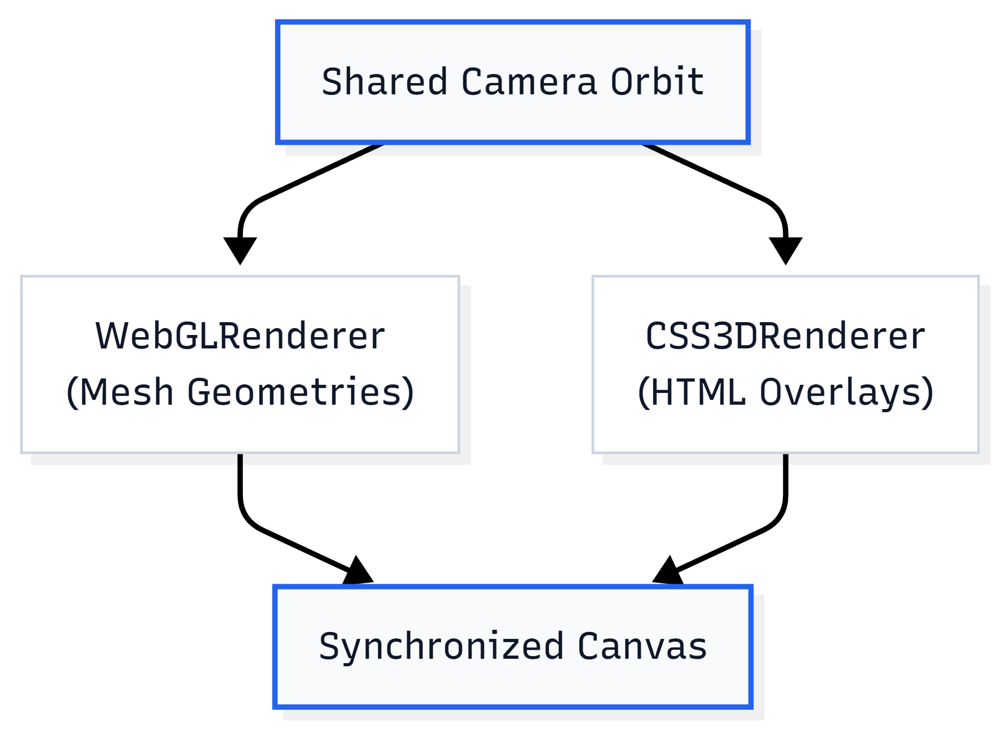

The Dimensional Crisis in Technical Documentation
The rapid evolution of distributed systems, microservices, and service-oriented network architectures has outpaced the capabilities of traditional technical documentation1. For decades, engineering teams have relied on flat, vector-based illustrations or static raster images, such as Portable Network Graphics (PNG) and Scalable Vector Graphics (SVG), to conceptualize system structures3. While these visual models serve as simple introductions, they introduce a systemic disconnect known as diagram drift6. Because traditional diagrams are detached from live source repositories, they require manual, human-driven updates every time an API contract, system path, or configuration file is modified4. Consequently, design artifacts quickly diverge from actual system implementations, leading to outdated documentation that hinders system analysis, troubleshooting, and developer onboarding7.
Beyond the maintenance challenges, flat visual mediums impose severe limits on the density of information that can be presented1. Modern software architectures require deep visibility into system interfaces, including complex JSON and YAML templates, data schemas, and sequential transaction paths4. Compressing this multidimensional operational data into two dimensions forces visual compromises1.
To show the exact structure of data flowing in and out of a single service node, developers must often create multiple text boxes, compressing extensive schema definitions into cramped, unreadable single-line annotations7. This visual clutter quickly overwhelms standard layouts, rendering complex technical diagrams unreadable1. As a result, engineering teams must constantly shift context, toggling between high-level structural diagrams and code-level source configurations to verify simple API specifications13.
Origin and Concept
The core concept of replacing static documentation with a dynamic, interactive 3D web platform originally came from my supervisor, Murat Kağan Temel (hantheemp)15, 26. We were casually talking one day about the massive headache of diagram drift and how frustratingly limited flat, traditional images really are7, 8. During our conversation, Murat casually proposed a brilliant, straightforward solution: why not ditch static drawing tools entirely and render our architectures dynamically in a 3D browser viewport using WebGL and something like Three.js13, 15.
His idea was simple but game-changing: instead of maintaining a separate design layout that we have to manually update every single time a config changes, we can feed active system files like JSON, YAML, or OpenAPI specifications directly into a WebGL rendering engine4, 11, 15. The 3D scene would serve as a "living" representation, adapting and updating itself automatically in real-time as the codebase evolves, completely eliminating diagram drift7, 8.
I was instantly hooked by this idea and wanted to expand on it. While Murat casually laid out the core logic of using dynamic site files as our source of truth, we realized how much potential this has if we push it further15. This article is my effort to take his brilliant spark and build it out into a full vision exploring how mapping configurations into a 3D coordinate space can let developers expand nested sub-graphs, trace active execution flows node-by-node, and debug active data transitions in a continuous, interactive workspace1, 12, 19.
Solving the Interface Clutter: Collapsible Node Schema Inspectors
The core visual limitation of traditional diagrams is the physical space required to display system interface parameters1. In a microservices architecture, showing what comes in and what goes out of a single node (such as a database, an API gateway, or an authentication service) typically requires drawing separate text frames5. For instance, showing a simple REST request/response pair requires developers to construct multiple text callouts on the diagram canvas, forcing them to squeeze multi-line schema properties into cramped boxes of around 100 characters7. This constraint quickly clutters the visual field, making it difficult to follow relationships across larger systems1.
Dynamic 3D virtualization resolves this visual crowding by leveraging spatial depth and interactive UI elements1. Rather than placing static text descriptions on the canvas, the three-dimensional viewport displays each node as a clean, spatial geometry20. High-density technical data is packaged into collapsible, interactive visual overlays14.
When a developer clicks a specific architectural node, the interface triggers a smooth camera interpolation and renders an interactive, expandable schema card. This card can host a complete JSON template, an OpenAPI definition, or database schemas directly adjacent to the node.

By utilizing high-performance web components like Monaco Editor or reactive JSON tree-viewers, developers can expand, collapse, and interact with complete nested data structures directly in the 3D scene14. This direct, on-demand visibility displays incoming and outgoing data structures clearly without adding visual clutter to the high-level system view1.
Sequential Traversals: Node-by-Node Flow Tracing
In flat 2D representations, tracing the sequential path of an execution flow (such as a user authentication request or a distributed transaction) requires tracing static, numbered connector lines or referencing separate sequence diagrams6. As systems grow in complexity, these static indicators overlap, making it difficult to isolate individual execution paths1.
The dynamic 3D architecture solves this issue by supporting sequential, node-by-node flow tracing directly within the physical layout of the network19. Using dynamic site files as the underlying model, the system can dynamically construct and highlight execution pathways across the active topology15.
During diagnostic reviews, engineers can activate a step-by-step traversal mode20. The visualization engine isolates the active execution trace, temporarily dimming unrelated nodes and links to around 15% opacity to minimize visual noise20.
As the developer navigates through the sequence, the camera smoothly interpolates (lerps) from node to node, highlighting each hop along the path20. Dynamic visual indicators, such as animated particle streams or pulsating emissive beams, travel along the active links to indicate data flow speed, volume, or system latency19.
At each node, the collapsible code panel automatically reveals the corresponding data transform, showing exactly how the inputs are processed and outputted before being routed to the next destination14. This tracing capability allows development teams to visualize exactly how data cascades through the system, dramatically speeding up root-cause analysis during system failures6.
Polymorphic Graph Branching within Single Spatial Renders
Large software infrastructures frequently deploy polymorphic variations of a core architecture across different execution environments4. For example, a production deployment, a localized testing sandbox, and a multi-region fallback setup might all share the same primary data backbone but employ different sub-systems, caching layers, or external integrations29. Traditional documentation requires maintaining separate diagrams for each variation, which increases manual updates and makes it difficult to track differences across environments3.
A dynamic 3D workspace handles this structural variation by rendering multiple polymorphic architectures within a single, integrated spatial scene20. Because the visualization is powered by dynamic data structures rather than static drawings, the system can parse and display sub-architectures nested within their local coordinate systems15.
The primary coordinate space maps the shared core flow, which remains static. Specialized branches and localized sub-graphs are loaded as nested spatial layers that can be toggled on demand.

By adjusting active filters or environmental configurations, developers can trigger smooth transitions where specific regional branches, secondary container pools, or local mock services materialize and align with the primary system nodes13. This capability allows teams to visually inspect and compare multiple environmental variations side-by-side within a single, coherent 3D view, ensuring that design modifications remain consistent across all deployment environments20.
Comparative Architectural Metamodels
| Documentation Metric | Static 2D Canvas Models (e.g., Visio, Lucidchart) | Static Diagrams-as-Code (e.g., Mermaid, PlantUML) | Live 3D Spatial Environments (WebGL / Three.js) |
|---|---|---|---|
| Primary Ingestion Source | Manual user inputs via graphical shape builders3 | Declarative plain-text files stored in git4 | Active environment metadata and configuration files4 |
| Vulnerability to Diagram Drift | High; requires manual visual updates7 | Moderate; requires manual updates of text files4 | Zero; updates dynamically based on system source data8 |
| API Parameter Detail | Squeezed into cramped visual annotations7 | Limited; restricted to static label definitions4 | Clickable, collapsible interactive inspectors14 |
| Execution Flow Support | Static, numbered lines with no context6 | Static execution pathways and connectors6 | Interactive step-by-step traversal animations19 |
| Environmental Polymorphism | Duplicate documents for each setup3 | Separate text configurations and renders29 | Integrated spatial layers in a single viewport20 |
| Client Rendering Engine | Static vector shapes or image files3 | Static 2D vector graphic renderers4 | High-performance WebGL/WebGPU pipelines1 |
Technical Engineering Blueprint
Building a production-ready 3D architectural visualization platform requires a robust pipeline that converts structural configuration files into an interactive, high-performance web interface. The following blueprint outlines the system components, coordinate systems, and rendering loops necessary to support the application.

3D Force-Directed Coordinate Projection
The system ingestion engine parses input site configuration files, such as dynamic environment variables, JSON graphs, or deployment manifests, into a structural node-link map15. To layout this graph in 3D coordinate space without manual coordinate mapping, the engine runs a 3D force-directed simulation28. The system utilizes a three-dimensional force integration model, calculating node positions over successive iterations to minimize edge crossings and optimize spacing1.
At each tick of the physics engine, the net force acting on each node \(i\) is calculated as the sum of repulsive forces from all other nodes, attractive forces along connected links, and centripetal forces drawing the graph toward the center of the scene28:
\[\mathbf{F}_i = \mathbf{F}_{i,\text{repulsive}} + \mathbf{F}_{i,\text{attractive}} + \mathbf{F}_{i,\text{gravity}}\]The component forces are mathematically expressed as:
\[\mathbf{F}_{i,\text{repulsive}} = \sum_{j \neq i} \left( \frac{k_{\text{rep}}}{\|\mathbf{p}_i - \mathbf{p}_j\|^2} \right) \mathbf{\hat{u}}_{ij}\] \[\mathbf{F}_{i,\text{attractive}} = \sum_{j \in \text{Adj}(i)} \left( k_{\text{att}} \cdot \|\mathbf{p}_i - \mathbf{p}_j\| \right) \mathbf{\hat{u}}_{ji}\] \[\mathbf{F}_{i,\text{gravity}} = -k_{\text{grav}} \cdot \mathbf{p}_i\]Where \(\mathbf{p}_i = [x_i \quad y_i \quad z_i]^T\) represents the coordinate position of node \(i\) in \(\mathbb{R}^3\), and \(\mathbf{\hat{u}}_{ij}\) is the unit vector pointing from node \(j\) to node \(i\)28. Once the forces reach equilibrium, these calculated positions are applied to the 3D meshes in the Three.js viewport, providing an optimal spatial layout for complex system structures16.
Real-Time Interactive Overlay Integration
To render expandable code panels and schema templates directly alongside 3D meshes, the system uses a dual-renderer setup. It runs a standard WebGL renderer to draw the 3D nodes and link geometries, alongside a CSS3DRenderer that projects interactive HTML elements into the same 3D coordinate space. Both renderers share a single projection camera to keep the 2D HTML layers perfectly synchronized with the 3D scene during camera pan, zoom, and rotate gestures.

To display the collapsible JSON schema templates clearly, the overlay system maps a responsive HTML component to each node14. When closed, the card displays as a minimal, compact indicator20. When clicked, the component expands into a full schema inspector, loading data templates via a localized Monaco Editor widget14.
To handle clicks across both rendering layers, the viewport container uses CSS pointer-events to manage events23. The overlay root blocks pointer interactions globally, allowing drag gestures to pass directly to the WebGL canvas23. However, individual interactive HTML panels opt back in to mouse control, allowing developers to scroll, select, and interact with the code structures directly23.
Optimizing Memory and Rendering Cycles
Maintaining smooth performance at 60 FPS requires careful optimization of memory and draw calls, particularly when visualizing large architectures with hundreds of active nodes and connectors1.
The layout engine implements several optimization techniques to keep rendering performance high:
-
Geometry Batching: Rather than instantiating a unique mesh object and material for every link, the engine groups lines into a single, merged coordinate array20. Using a single
THREE.LineSegmentsmesh reduces draw calls significantly, preventing GPU overhead1. -
Imperative Frame Updates: To bypass the performance overhead of React's virtual DOM reconciliation loop, the rendering engine decouples node position calculations from React's state updates16. The physics engine calculates position vectors inside a dedicated web worker28. In the main thread, the Three.js objects are updated imperatively via direct references (refs) during the
useFramerender loop, keeping updates highly responsive16. - Active Culling and Level-of-Detail (LoD) Scaling: The system implements active camera frustum culling, bypassing calculation cycles for nodes and panels that fall outside the active view16. Additionally, the level-of-detail engine scales down rendering complexity based on camera distance, rendering simple visual proxies at wide zooms and loading complete interactive panels only when the user zooms in closely1.
Strategic Conclusions
The shift toward dynamic 3D architectural virtualization represents a major evolution in how software development teams document, analyze, and manage complex system topologies1. By replacing static, manual diagrams with interactive spaces rendered directly from system metadata, this paradigm resolves the dual issues of visual clutter and diagram drift7.
Originally conceived by Murat Kağan Temel, this concept provides a unified, interactive source of truth, allowing teams to explore nested structures, trace operational paths node-by-node, and examine live code schemas directly inside the visualization15.
As microservices, distributed cloud architectures, and cloud-native systems continue to grow in complexity, adopting interactive 3D documentation pipelines will be essential for teams to maintain clear design alignment, speed up debugging, and simplify technical communication across the development lifecycle2.
Works Cited
- 1. Three.js Interfaces: Production 3D for Web Applications | IGC - Intelligent Graphic & Code, intelligentgraphicandcode.com
- 2. 5G Service-Based Architecture - Devopedia, devopedia.org
- 3. Best Architecture Diagrams Software | 2026 Edition - WifiTalents, wifitalents.com
- 4. AI Diagramming Tools vs Diagram-as-Code: Which Is Better? - FlowcastGPT, flowcastgpt.com
- 5. Top 10 Best Architecture Diagrams Software | Tested in 2026 - ZipDo, zipdo.co
- 6. Detecting Architectural Drift in Safety-Critical Firmware through Runtime Trace Analysis - arXiv, arxiv.org
- 7. Flowchart and Diagramming Tools for Complex Software Systems in 2026, in-com.com
- 8. How to fix your outdated Azure Diagrams forever - I dont like AI, idontlikeai.dev
- 11. Open-source 5G: Service Based Architecture: HTTP/2 & OpenAPI, nuradioconcepts.io
- 12. Top 10 Best Dependency Diagram Software of 2026 - Gitnux, gitnux.org
- 13. Building an Interactive 3D Experience with Three.js and React for Schildr - DEV Community, dev.to
- 14. Perfectly aligning an interactive CSS3D terminal inside a curved WebGL CRT monitor, discourse.threejs.org
- 15. hantheemp's gists · GitHub, github.com/hantheemp
- 16. The Ultimate Guide to Mastering Three.js for 3D Development, jsmastery.com
- 19. Visualizing graphs in 3D with WebGL - Neo4j, neo4j.com
- 20. Changelog: Site Releases & Decisions - MindHYVE.ai, mindhyve.ai
- 23. HTML and WebGL Integration with Three.js | IGC - Intelligent Graphic & Code, intelligentgraphicandcode.com
- 26. Mastering 3D Visualization with Three.js: A Comprehensive Guide to Satellite Modeling and Animation - Homestyler, homestyler.com
- 28. 3D force-directed graph component using ThreeJS/WebGL - GitHub, github.com/vasturiano
- 29. Top 10 Best Arch Diagram Software | 2026 Expert Picks - Worldmetrics, worldmetrics.org